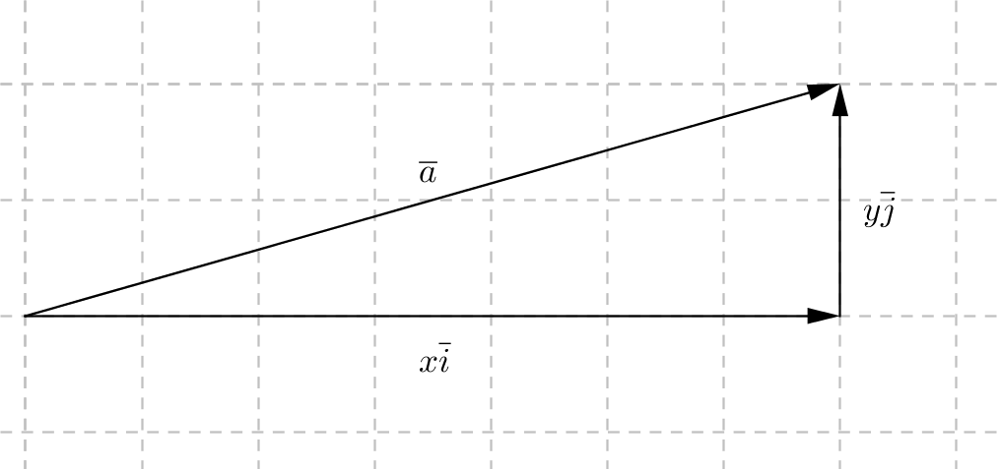
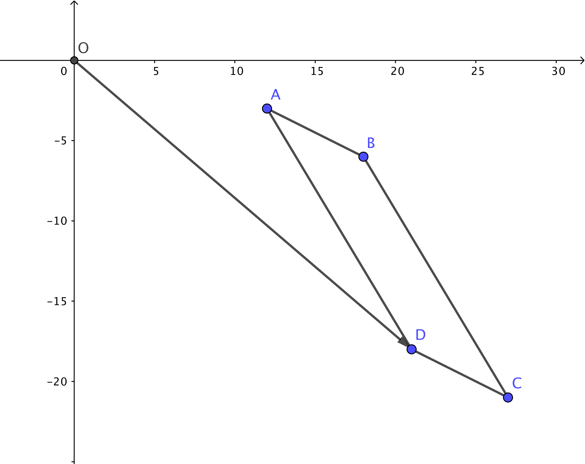
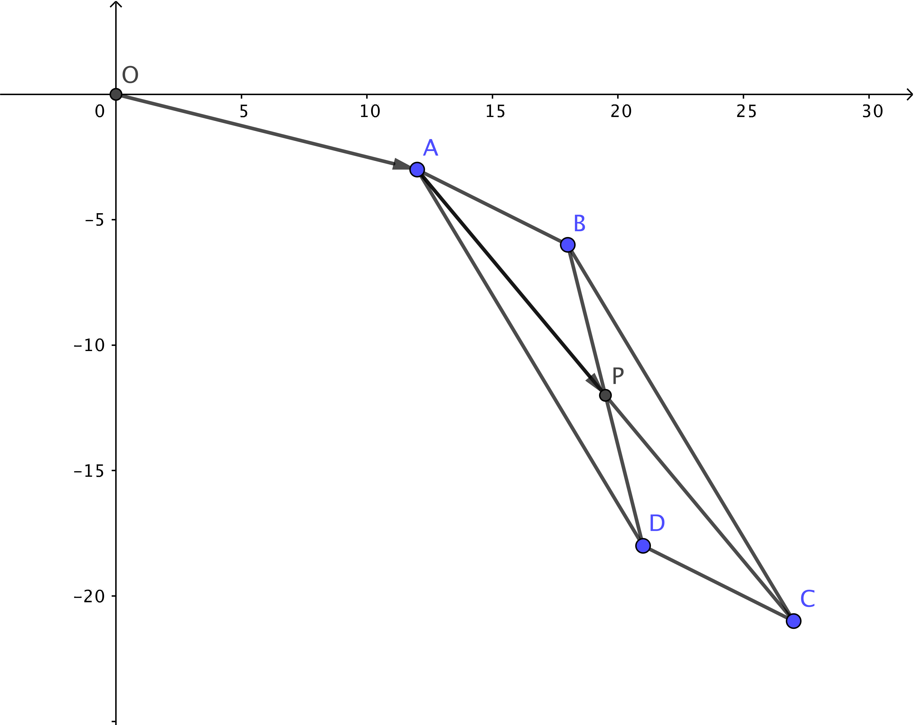

7. Vektorer i xy-planet
Uttryck \(\overline{a}\), \(\overline{b}\) och \(\overline{c}\) med hjälp av vektorerna \(\overline{i}\) och \(\overline{j}\). Hur långa är \(\overline{a}\), \(\overline{b}\) och \(\overline{c}\)?

I ett karteiskt koordinatsystem använder vi oss av \(\overline{i}\) och \(\overline{j}\) som basvektorer. \(\overline{i}\) är parallell med \(x\)-axeln och \(\overline{j}\) är parallell med \(y\)-axeln.
Längden av en vektor i \(xy\)-planet får vi med hjälp av Pythagoras sats.

Längden av vektorn \(\overline{a}=x\overline{i} + y \overline{j}\) är \(\mid \overline{a} \mid =\sqrt{x^2+y^2}\).
Exempel 1 Uttryck vektorn \(2\overline{a} -3\overline{b}\) med hjälp av \( \overline{i} \) och \( \overline{j} \). Bestäm längden av \(2\overline{a} -3\overline{b}\).

Lösning
Vi ser att \( \overline{a} = 2\overline{i} + \overline{j} \) och \( \overline{b} = -2\overline{i} + 3\overline{j} \)
Vi får
\( \begin{array}{rcl} 2\overline{a} - 3 \overline{b} & = & 2(2\overline{i} + \overline{j}) - 3 (-2\overline{i} + 3\overline{j}) \\ & = & 4\overline{i} + 2\overline{j} +6\overline{i} -9\overline{j}) \\ & = & 10\overline{i} -7\overline{j} \\ \end{array} \)
Längden är
\( \begin{array}{rcl} \mid 2\overline{a} - 3 \overline{b} \mid & = & \sqrt{10^2 + (-7)^2} \\ & = & \sqrt{149} \approx 12,2 \text{ l.e.} \\ \end{array} \)
Då vi låter vektorn \(\overline{a}=x\overline{i} + y \overline{j}\), vars komponenter består av \(\overline{i}\) och \(\overline{j}\), börja i origo så slutar vektorn i punkten \((x,y)\). Dessa vektorer kallar vi för ortsvektorer.

Exempel 2
- På vilken punkt pekar \(\overline{a}=3\overline{i} -2 \overline{j}\)?
- Bestäm vektorn mellan origo och \((-2,-5)\).
Vektorn mellan punkterna \(A= (x_1,y_1)\) och \(B=(x_2,y_2)\) kan vi bestämma som så att vi först rör oss via \(\overrightarrow{OA}\) och \(\overrightarrow{OB}\). Vi får då \(\overrightarrow{AB}=\overrightarrow{AO}+\overrightarrow{OB}=-\overrightarrow{OA}+\overrightarrow{OB}\).

Vi kan även direkt utnyttja punkterna \(A= (x_1,y_1)\) och \(B=(x_2,y_2)\). Då får vi att \(\overrightarrow{AB}=(x_2-x_1)\overline{i}+(y_2-y_1)\overline{j}\).

Exempel 3 Bestäm vektorn mellan punkterna \((-1,-3)\) och \((2,5)\).
Lösning
Punkterna är \((-1,-3)\) och \((2,5)\). Dessa sätter vi in i \( (x_2-x_1)\overline{i}+(y_2-y_1)\overline{j}=(2-(-1))\overline{i}+(5-(-3))\overline{j}=3\overline{i}+8\overline{j}.\)
Vektorn är \(3\overline{i}+8\overline{j}\).
För att få längden av en vektor bestämmer vi avståndet mellan två punkter, \(A= (x_1,y_1)\) och \(B=(x_2,y_2)\), och utnyttjar vi Pythagoras sats.

\(\mid \overrightarrow{AB} \mid = \sqrt{(x_2-x_1)^2+(y_2-y_1)^2}\)
Exempel 4 Vektorn \(\overline{a}=3\overline{i}+\overline{j}\) börjar i \((-2,-1)\). Bestäm ändpunkten \(B\). Hur lång är \(\overrightarrow{OB}\)?
Lösning
Vi bildar \(\overrightarrow{OB}=\overrightarrow{OA}+\overrightarrow{AB}=\overrightarrow{OA}+\overline{a}\).
Vi får att \(\overrightarrow{OA}=-2\overline{i}-\overline{j}\) och \(\overline{a}=3\overline{i}+\overline{j}\).
\(\overrightarrow{OB}=-2\overline{i}-\overline{j}+3\overline{i}+\overline{j}=\overline{i}\).
B:s koordinat är \((1,0)\), längden \(\mid \overrightarrow{OB}\mid =1\).
Uppgifter
Låt följande vektorer börja i origo. Kombinera rätt ändpunkt och vektor.
Välj mellan
\((-2,3)\)\((-1,-1)\)\((0,5)\)\((3,2)\)Ändpunkt Vektor \(3\overline{i}+2\overline{j}\) \(-2\overline{i}+3\overline{j}\) \(-\overline{i}-\overline{j}\) \(5\overline{j}\) Ändpunkt Vektor \((3,2)\) \(3\overline{i}+2\overline{j}\) \((-2,3)\) \(-2\overline{i}+3\overline{j}\) \((-1,-1)\) \(-\overline{i}-\overline{j}\) \((0,5)\) \(5\overline{j}\) Kombinera rätt vektor med rätt start och ändpunkt.
Välj bland följande:
\(6\overline{i}+3\overline{j}\)\(4\overline{i}-\overline{j}\)\(3\overline{i}-\overline{j}\)Vektor Start och ändpunkt \((-2,4)\) och \((2,3)\) \((-1,1)\) och \((5,4)\) \((1,1)\) och \((4,2)\) Vektor Start och ändpunkt \(4\overline{i}-\overline{j}\) \((-2,4)\) och \((2,3)\) \(6\overline{i}+3\overline{j}\) \((-1,1)\) och \((5,4)\) \(3\overline{i}-\overline{j}\) \((1,1)\) och \((4,2)\) Kombinera rätt längd med rätt vektor.
Välj bland följande längder:
\(2\sqrt{2}\) l.e.\(4\) l.e.\(5\) l.e.Längd Vektor \(4\overline{i}\) \(2\overline{i}+2\overline{j}\) \(-3\overline{i}-4\overline{j}\) Längd Vektor \(4\) l.e. \(4\overline{i}\) \(2\sqrt{2}\) l.e. \(2\overline{i}+2\overline{j}\) \(5\) l.e. \(-3\overline{i}-4\overline{j}\) - Bestäm slutpunkten då vektorn \(\overline{a}=-3\overline{i}+4\overline{j}\) börjar i punkten \((2,1)\).
Vi bildar vektorn \(\overrightarrow{OP}\).
\(\begin{array}{rcl} \overrightarrow{OP} & = & \overrightarrow{OA} + \overline{a} \\ & = & 2\overline{i}+\overline{j} -3\overline{i}+4\overline{j} \\ & = & -\overline{i}+5\overline{j} \\ \end{array}\)
\(P\):s ändkoordinat är \((-1,5)\).
- Låt \(\overline{a}=-2\overline{i}+2\overline{j}\) och \(\overline{b}=-\overline{i}-3\overline{j}\) .
- Bestäm slutpunkten för \(\overline{v}=\overline{a}-2\overline{b}\) då \(\overline{v}\) börjar i origo.
\(\begin{array}{rcl} \overline{v} & = & \overline{a}-2\overline{b} \\ & = & -2\overline{i}+2\overline{j}-2(-\overline{i}-3\overline{j})\\ & = & -2\overline{i}+2\overline{j}+2\overline{i}+6\overline{j}\\ & = & 8\overline{j}\\ \end{array}\)
Slutpunkten är \((0,8)\).
- Bestäm längden av \(\overline{a}+\overline{b}\).
\(\begin{array}{rcl} \overline{a}+\overline{b} & = & -2\overline{i}+2\overline{j}-\overline{i}-3\overline{j} \\ & = & -3\overline{i}-\overline{j}\\ \end{array}\)
Längden är \(\mid \overline{a}+\overline{b} \mid = \sqrt{(-3)^2+(-1)^2} = \sqrt{10}\) l.e.
- Bestäm slutpunkten för \(\overline{v}=\overline{a}-2\overline{b}\) då \(\overline{v}\) börjar i origo.
- För sträckan \(AB\) gäller att \(A=(-2,2)\) och \(B=(6,4)\). Bestäm koordinaten för punkten P då vi vet att
- \(P\) är mittpunkt för \(\overrightarrow{AB}\) .
Vi har \(\overrightarrow{OP} = \overrightarrow{OA} + \overrightarrow{AP} = \overrightarrow{OA} + \dfrac{1}{2}\overrightarrow{AB}\).
\(\overrightarrow{OA} = -2\overline{i} +2\overline{j}\)
\(\overrightarrow{AB} = (6-(-2))\overline{i} +(4-2)\overline{j} = 8\overline{i} +2\overline{j}\).
\(\begin{array}{rcl} \overrightarrow{OP} & = & -2\overline{i}+2\overline{j} +\dfrac{1}{2}(8\overline{i}+2\overline{j})\\ & = & -2\overline{i}+2\overline{j} +4\overline{i}+\overline{j})\\ & = & 2\overline{i}+3\overline{j}\\ \end{array}\)
P:s koordinater är \((2,3)\).
- P delar sträckan AB i förhållandet 3:1.
Vi har \(\overrightarrow{OA}\) och \(\overrightarrow{AB}\) är samma som i föregående moment.
Vi får
\(\begin{array}{rcl} \overrightarrow{OP} & = & \overrightarrow{OA} +\overrightarrow{AP} \\ & = & \overrightarrow{OA} +\dfrac{3}{4}\overrightarrow{AB} \\ & = & -2\overline{i}+2\overline{j} +\dfrac{3}{4}(8\overline{i}+2\overline{j})\\ & = & -2\overline{i}+2\overline{j} +6\overline{i}+\dfrac{3}{2}\overline{j}\\ & = & 4\overline{i}+3\dfrac{1}{2}\overline{j}\\ \end{array}\)
P:s koordinater är \((4, 3\frac{1}{2})\).
- \(P\) är mittpunkt för \(\overrightarrow{AB}\) .
- Från punkten \(A= (-2,-1)\) förflyttar vi oss 15 enheter i riktning av \(\overline{a} = 3\overline{i} - 4\overline{j}\). På vilken punkt landar vi?
Vi har \(\overrightarrow{OP} = \overrightarrow{OA} + 15\overline{a^0}\)
\(\overrightarrow{OA} = -2\overline{i}-\overline{j}\).
\(\mid \overline{a} \mid = \sqrt{3^2+(-4)^2} =\sqrt{25} = 5\).
\(\begin{array}{rcl} \overrightarrow{OP} & = & -2\overline{i} -\overline{j} + 15\cdot \dfrac{1}{5}(3\overline{i} -4\overline{j})\\ & = & -2\overline{i} -\overline{j} + 3(3\overline{i} -4\overline{j})\\ & = & -2\overline{i} -\overline{j} + 9\overline{i} -12\overline{j}\\ & = & 7\overline{i} -13\overline{j}\\ \end{array}\)
P:s koordinater är \((7,-13)\).
- Bestäm slutpunkten då vi från punkten \((3,1)\) förflyttar oss 5 enhetsvektorer i riktningen \(\overline{a}=-2\overline{i}+\overline{j}\) .
Vi betecknar med P punkten där vi landar.
\(\overrightarrow{OP} = \overrightarrow{OA} + 5\overline{a^0}\).
\(\overrightarrow{OA} = 3\overline{i} + \overline{j}\).
\(\mid \overline{a} \mid =\sqrt{(-2)^2+1^2} = \sqrt{5}\).
\(\overline{a}^0 = \dfrac{1}{\sqrt{5}}(-2\overline{i}+j)\).
Vi får
\(\begin{array}{rcl} \overrightarrow{OP} & = & 3\overline{i}+\overline{j}+5\cdot \dfrac{1}{\sqrt{5}}(-2\overline{i}+\overline{j})\\ & = & 3\overline{i}+\overline{j}+\sqrt{5}(-2\overline{i}+\overline{j})\\ & = & 3\overline{i}+\overline{j}-2\sqrt{5}\overline{i}+\sqrt{5}\overline{j}\\ & = & (3-2\sqrt{5})\overline{i}+(1+\sqrt{5})\overline{j}\\ \end{array}\)
P:s koordinater är \((3-2\sqrt{5}, 1+\sqrt{5})\).
- Hörnpunkterna i en parallellogram, ABCD, är A \( (12,3) \), B \( (18,6) \) och D\( (21,-18) \).
- Bestäm koordinaterna för hörnpunkten C.
Vi har följande situation

Vi bilar vekorn \( \overrightarrow{OC} \) för att komma fram till koordinaten C.
Vi får \( \overrightarrow{OC} = \overrightarrow{OD} + \overrightarrow{DC} \). \( \overrightarrow{DC} = \overrightarrow{AB} \) eftersom sidorna är parallella.
\( \overrightarrow{AB} = (18-12)\overline{i} + (-6-(-3))\overline{j} = 6 \overline{i} - 3\overline{j} \).
Vi får:
\( \begin{array}{rcl} \overrightarrow{OC} & = & \overrightarrow{OD} + \overrightarrow{DC} \\ & = & 21\overline{i} - 18\overline{j} + 6 \overline{i} - 3\overline{j} \\ & = & 27 \overline{i} - 21\overline{j} \\ \end{array} \)
C:s koordinater är \( (27,-21) \).
- Bestäm koorinaten för diagonalernas skärningspunkt.
Diagonalerna skär varandra vid halva längden.
Vi söker koordinaterna för \( P \).

\( \overrightarrow{AC} = (27-12)\overline{i} + (-21-(-3))\overline{j} = 15 \overline{i} - 18 \overline{j} \).
Vi får:
\( \begin{array}{rcl} \overrightarrow{OP} & = & \overrightarrow{OA} + \overrightarrow{AP} \\ & = & \overrightarrow{OA} + \dfrac{1}{2}\overrightarrow{AC} \\ & = & 12\overline{i} - 3 \overline{j} +\dfrac{1}{2} (15 \overline{i} - 18 \overline{j}) \\ & = & \dfrac{39}{2} \overline{i} - 12 \overline{j} \\ \end{array} \)
Skärningspunkten är \( (\dfrac{39}{2} , -12 ) \), alltså \( (19\dfrac{1}{2} , -12 ) \).
- Bestäm koordinaterna för hörnpunkten C.
- Bestäm i alla ortsvektorer av formen \(x\overline{i}+y\overline{j}\) så att \(x\) och \(y\) är heltal och att \(\overline{a}\):s längd är 5 l.e. Hur många finns det?
Utgå från att längden skall vara 5 för vektorn \(x\overline{i}+y\overline{j}\).
Eftersom vektorerna är av formen \(x\overline{i}+y\overline{j}\) så gäller att längden av dessa skall vara 5.
Vi får \(5=\sqrt{x^2+y^2} \Leftrightarrow 5^2 = x^2+y^2\). De talpar som löser denna ekvation är \((0,5)\), \((3,4)\), \((4,3)\) och \((5,0)\). Eftersom kvadraten på ett negativ tal blir positivt är talparen \(\pm(0,5)\), \(\pm(3,4)\), \(\pm(4,3)\) och \(\pm(5,0)\).
Vekorerna är åtta stycken och de är: \(\pm5\overline{i}\), \(\pm5\overline{j}\), \(\pm4\overline{i}\pm3\overline{j}\).
- Ett plan spänns upp av tre punkter, \(A=(-1,-1)\), \(B=(1,4)\) och \(C=(3,-1)\). Bestäm punkten \(P\) så att \(\overrightarrow{PA}+\overrightarrow{PB}+\overrightarrow{PC}=\overline{0}\).
Punkten \( P \) har koordinaterna \( (x,y) \).
Vi bildar vektorerna,
\( \overrightarrow{PA} = (-1-x)\overline{i} + (-1-y)\overline{j} \)
\( \overrightarrow{PB} = (1-x)\overline{i} + (4-y)\overline{j} \)
\( \overrightarrow{PC} = (3-x)\overline{i} + (-1-y)\overline{j} \)
Sedan bildar vi \(\overrightarrow{PA}+\overrightarrow{PB}+\overrightarrow{PC}=\overline{0} \).
\( \begin{array}{rcl} \overrightarrow{PA}+\overrightarrow{PB}+\overrightarrow{PC} & = & \overline{0} \\ (-1-x)\overline{i} + (-1-y)\overline{j} + (1-x)\overline{i} + (4-y)\overline{j} + (3-x)\overline{i} + (-1-y)\overline{j} & = & 0\overline{i} + 0\overline{j} \\ (-3x+3)\overline{i} + (-3y+2)\overline{j} & = & 0\overline{i} + 0\overline{j} \\ \end{array} \)
Alltså
\( \left\{ \begin{array}{l} -3x + 3 = 0 \\ -3y + 2 = 0 \\ \end{array} \right. \)
Vi får \( x = 1 \) och \( y = \dfrac{2}{3} \). \( P \):s koordinater skall vara \( (1, \dfrac{2}{3})\).